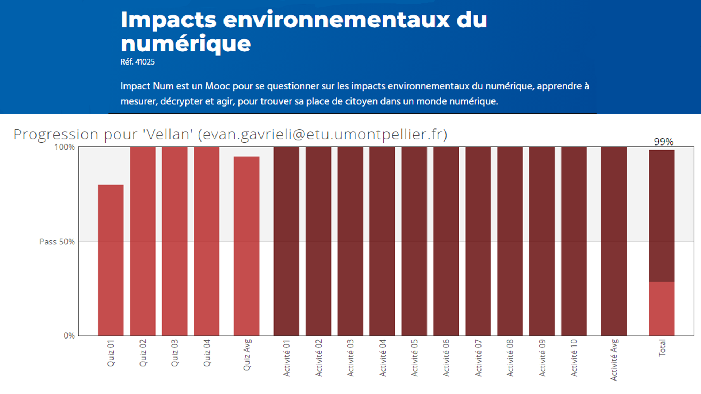
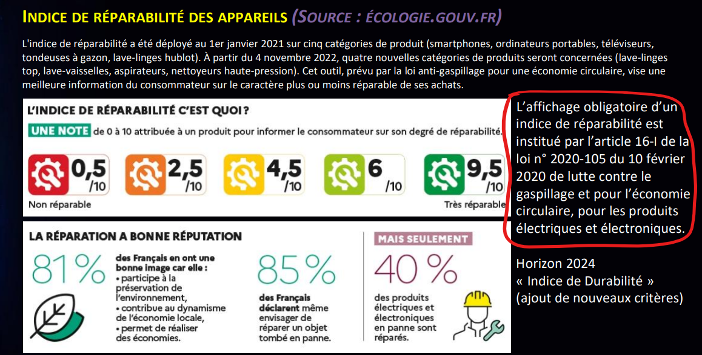

Description :
La ressource économie durable et numérique est une ressource questionnant sur l'impact écologique de l'économie du numérique.
Composantes essentielles :
CE 6.02 | En accompagnant la mise en oeuvre des évolutions informatiques
Questionner sur l'impact de l'économie du numérique inclus naturellement de se questionner sur l'impact des futures solutions informatiques.

CE 6.03 | En veillant au respect des contraintes juridiques
Chaque organisation a des règles à respecter concernant leur impact écologique.

Apprentissages critiques :
AC 36.02 | Identifier les enjeux de l'économie de l'innovation numérique
Le principe même de la ressource était d'identifier les enjeux du numérique et de chercher quelles solutions sont possibles.